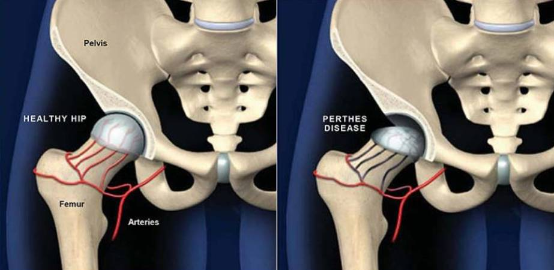

Legg - Calvé - Perthes
Perthes was born in January 1869 in Mors in the Rhineland, Germany, the son of a father who was a high school teacher at the local school. When his mother died, possibly of tuberculosis, they moved to Davos, Switzerland where his father started a school for children with lung diseases, where he grew up until his father was called to Bonn. His father died leaving him with his aunt Agnes, then through his aunt's grandfather, who was a medical book seller, he met Trendelenburg, who influenced him to study medicine. In 1891 he graduated with a doctorate in medicine at the University of Bonn. Later he became Trendelenburg's assistant, following him from Bonn to Leipzig in 1895. Perthes attended several medical schools (Freiburg, Berlin, and Bonn) a situation that was very common at the time. From 1900 to 1901 he went to China in the port of Tsingtao as a surgeon with the German army, there he carried out a radiological study of the forced deformity in the feet of Chinese women. Perthes described the effect of X-rays on epithelial cell growth as well as its destructive effect on warts, skin cancer, and metastatic breast cancer. He also described the effect on plant cells and on the chromatin in their nucleus. He used X-rays as a post-surgery treatment for breast carcinoma, which is why he is considered a pioneer of radiotherapy. Other areas of interest for Perthes were joints and bones, just like his teacher Trendelenburg. It was during his stay in Leipzig that he described osteochondritis. Legg-Calve-Perthes disease. of the hip that bears his name along with that of Legg and Calvé.
